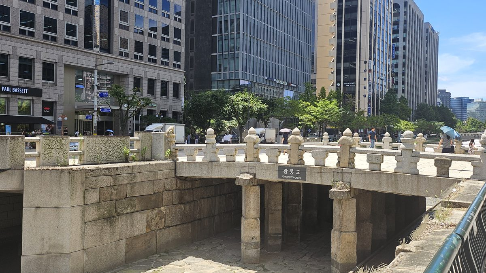
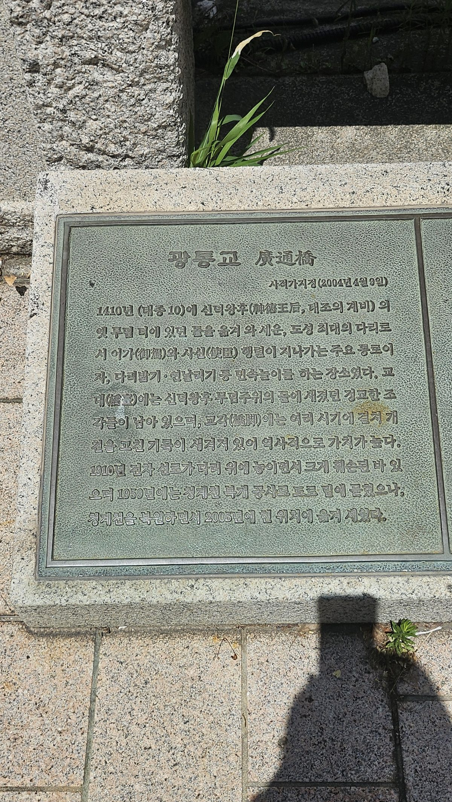
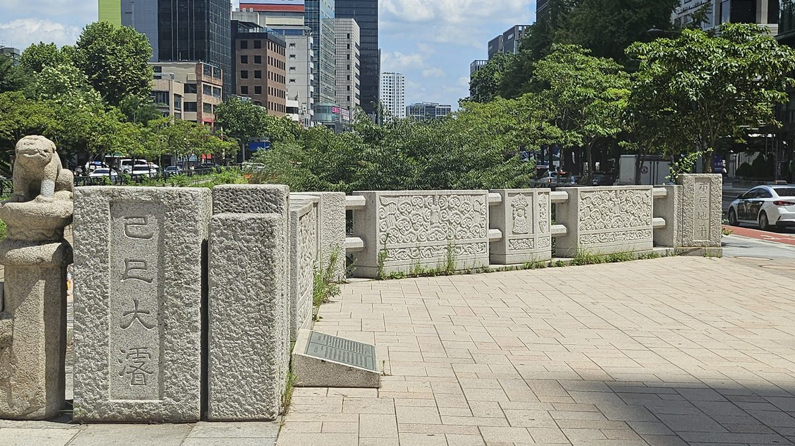
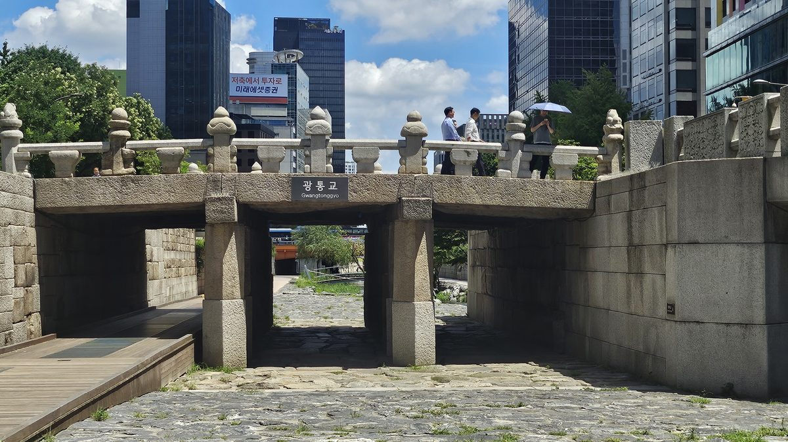

청계광장에서 물길을 따라 걷다 다리 하나를 만난다. 다리 밑바닥, 화강암 돌 틈 사이로 구름무늬와 갑옷 두른 신장(神將)의 얼굴이 삐죽 나와 있다. 일부러 뒤집어 끼워 넣었다는 이야기도 전해진다. 그 돌의 원래 주인은, 왕의 계모였다.

세자 자리를 빼앗긴 아들
1392년, 조선 개국 직후 태조의 계비 신덕왕후 강씨는 정도전 등의 지지를 얻어 자신의 소생 방석을 세자로 세우는 데 성공했다. 장자도, 가장 공이 큰 아들도 아니었다. 이방원에게는 이 결정이 곧 배제의 선언이었다.
1396년 신덕왕후가 세상을 떠나자 태조는 도성 안 취현방(지금의 정동 일대)에 정릉을 조성했다. 특별히 제주목사 여의손에게 일류 석공을 동원시켜 당대 최고 수준의 석물을 만들게 했을 만큼, 그녀에 대한 태조의 애정은 각별했다.
피로 답하다
1398년 이방원은 경복궁 근정문 일대에서 정도전 세력을 제거하고, 신덕왕후의 두 아들 방번·방석을 함께 죽였다(1차 왕자의 난). 세자 자리를 빼앗겼던 아들이, 그 자리를 준 여인의 자식들 목숨으로 되갚은 셈이었다.
그러나 이방원은 곧바로 왕이 되지 않았다. 정종을 거쳐, 1400년 2차 왕자의 난으로 형 방간마저 제압한 뒤에야 세제(世弟)로 책봉되고 곧 왕위에 올랐다. 계모를 둘러싼 갈등도, 형제와의 충돌도 그의 권력 형성 과정과 떼어놓고 보기 어렵다.
무덤을 도성 밖으로, 돌은 다리 밑으로
1408년 태조가 승하하자 상황이 급변했다. 태종은 이듬해인 1409년, "역대 제왕의 능묘가 모두 도성 밖에 있는데 정릉만 도성 안에 있는 건 옳지 않다"는 명분으로 정릉을 도성 밖 사을한산(현 성북구 정릉동)으로 옮겨버렸다.
이장 당시 옛 정릉 자리에 있던 석물 중 장명등과 고석(혼유석 받침돌)만 새 정릉으로 함께 옮겨졌고, 병풍석·신장석·난간석은 옛터에 묻어두었다. 그리고 1410년 여름 홍수로 청계천 광통교(흙다리)가 무너지자, 묻어뒀던 그 돌들을 꺼내 돌다리를 새로 놓는 데 썼다.
여기서 놓치기 쉬운 지점이 하나 있다. 이 결정은 원한 풀이인 동시에, 실용적으로도 불가피한 선택이었다. 청계천(당시 이름 개천)은 도성 한복판을 가로지르는 하천으로, 폭이 좁고 배수가 원활하지 않아 여름철 큰비만 오면 범람이 잦았다. 흙다리였던 광통교는 홍수 때마다 유실 위험에 노출됐고, 실제로 1410년 홍수 당시 다리가 떠내려가며 사람이 물에 빠져 죽는 인명 피해까지 발생했다(『태종실록』 10년 8월 8일). 도성에서 가장 크고, 임금의 행차와 사신 행렬이 반드시 거치는 이 다리를 흙다리로 방치할 수는 없었다.
즉 태종은 계모에 대한 원한을 풀면서, 동시에 도성 제일의 다리를 반영구적인 석조 인프라로 격상시키는 치수 사업을 완성한 셈이다. 감정과 행정이 한 번의 공사에 겹쳐진 것이다. 그리고 이 다리가 그만큼 중요했다는 증거는 이후 역사가 증명한다 — 1760년 영조가 대대적인 청계천 준천(浚川) 사업을 벌이며 이 다리 교각에 직접 "경진지평(庚辰地平)" 기준선을 새겼고, 1809년 혹은 1869년(사료에 따라 다름)에는 "기사대준(己巳大濬)"이라는 대규모 재준설 기록까지 추가됐다. 태종이 놓은 돌다리가 400년 넘게 조선 왕조의 치수 행정 기준점으로 계속 쓰인 것이다.
간혹 "신덕왕후의 혼유석이 광통교에 쓰였다"고 서술되는 경우가 있으나, 이는 부정확하다. 혼유석과 이를 받치는 고석은 오히려 새 정릉으로 함께 이전되어 지금도 그 자리에 남아 있다. 광통교에 쓰인 것은 병풍석·신장석·난간석이다.
후대의 여러 해설은 이를 태종이 계모 신덕왕후에게 품었던 원한을 드러낸 사건으로 해석한다. 도성 제일의 다리, 왕의 행차와 사신 행렬이 지나는 그 자리에 왕비의 무덤돌을 깔아 백성들이 밟고 지나가게 만든 것이다. 원한을 갚는 방식이, 동시에 나라의 실질적 필요를 해결하는 방식이었다는 이중성이야말로 이 다리의 핵심이다.
처박힌 덕에 살아남은 돌
광통교는 1910년 전차선로 공사로 땅에 묻혔고, 1958년 청계천 복개공사로 완전히 자취를 감췄다. 이때 남은 부재 일부는 창덕궁·창경궁·탑골공원으로 흩어졌다. 2005년 청계천 복원사업 때 서울시는 발굴로 확인된 원래 유구와 흩어진 부재를 다시 모아 복원했다 — 지금 보이는 정릉 석물은 모형이 아니라 1410년 그 돌 자체다.
복원된 광통교의 이전 거리에 대해 자료마다 편차가 있다. 2005년 당시 경향신문 보도는 원위치보다 15m 상류 지점이라 전하고, 다른 자료는 150m 상류로 기록한다. 본문에서는 "원위치에서 서쪽(상류)으로 이전 복원"으로만 표기하는 것이 안전하다.
아이러니한 지점은 여기다. 다리 밑바닥에 처박혀 사람 손을 덜 탄 덕에, 이 돌들은 오히려 조선 초 도교·불교 문화가 뒤섞인 원형 그대로 21세기까지 남았다. 왕비의 석물이 다리 부재로 재사용된 자리가, 결과적으로 그 유물을 오래 보존한 역설적인 장소가 되었다.

다리 위에 새겨진 것은 원한만이 아니었다
현장의 사적 안내판(2004년 4월 9일 사적 지정)은 지금까지의 조사 내용과 대체로 일치한다. 다만 문안은 청계천 복개 시점을 "1959년"으로 적고 있는데, 이는 여러 온라인 사료(1958년)와 1년 차이가 난다 — 현장 표기와 문헌 사이의 사소하지만 분명한 불일치다.

더 흥미로운 발견은 교각에 새겨진 별도의 간지(干支) 명문이다. 다리 위 난간 기둥 두 곳에서 "경진지평(庚辰地平)"이, 다른 교각 하나에서 "기사대준(己巳大濬)"이 확인된다. 이는 정릉 석물과는 무관한, 훨씬 후대의 기록이다.

경진지평(庚辰地平)은 영조 36년(1760) 대대적인 청계천 준천(浚川) 사업을 완료하며 새긴 기준선 명문이다 — 이후 준설할 때 이 글자가 드러나는 정도로 준천의 적정성을 가늠했다. 원래 수표교의 대표 유물로 더 잘 알려져 있으나, 광통교 교각에도 같은 명문이 새겨져 있다.
기사대준(己巳大濬)은 "기사년에 크게 준설했다"는 뜻이나, 정확한 연도는 사료마다 갈린다 — 순조 9년(1809)으로 보는 자료와 고종 6년(1869)으로 보는 자료가 공존한다. 60년마다 돌아오는 간지 특성상 혼동되기 쉬운 지점이라, 본문에서는 특정 연도를 단정하지 않고 "기사년(1809 혹은 1869)"으로 병기하는 것이 안전하다.
즉 이 다리 하나에 태종의 원한(1410) — 영조의 치수 행정(1760) — 후대의 보수(1809/1869)까지, 조선 정치사 400년이 겹겹이 새겨져 있는 셈이다. 왕비의 석물이 놓인 자리가 결국 왕조 전체의 치수 기록판이 된 것이다.
일부 자료(나무위키)는 정릉 석물이 고의로 뒤집혀 끼워졌다고 서술하지만, 이번 현장 사진만으로는 조각의 원래 배치 방향을 확정하기 어려웠다. 정릉 조성 당시의 배치도 등 비교 자료가 있어야 판단 가능한 부분이라, 서술 시 "~라고 전해진다" 수준의 조심스러운 표현이 적절해 보인다.
광통교에서 보이는 것은 단순한 원한만이 아니다. 태종은 자신을 위협했던 정치적 흔적을 지우는 동시에, 그 돌로 수도의 중요한 다리를 다시 세웠다.
사람과 흔적을 제거하는 데서 멈추지 않고, 그 자리에 국가가 작동할 구조를 놓는 것. 이것이 이후 태종 정치에서 반복되는 방식이었다.
이제 질문은 바뀐다. 도전자를 제거해 왕이 된 사람은, 그 왕권을 어떻게 다시는 흔들리지 않게 만들었을까. 그 답을 찾아 다음 현장, 창덕궁으로 간다.